Volodymyr Kushnir
Résumé
— Hello! I’m skilled frontend developer with 7 years of experience in UI/UX design, application development, and database modeling. I strive to craft precise, responsive, fast, easy-to-use environments with both strong purpose and great looks.
Experience
-
1st October 2016 – present
Senior full-stack developer at Dutchstar
- build, test, and deploy applications written with React + Redux and Phalcon + MySQL
-
25th May 2014 – forever
Married to 👩🏻 Lyudmyla Mandzyuk
- do all the different things
-
1st September 2012 – 30th September 2016
Service Center Databases Lead at Sumitomo Electric Bordnetze Ukraine
- managed MySQL multi-master clusters, Oracle failover clusters, Microsoft SQL mirrored/replicated servers (monitoring, backup/restore, users/groups/roles, schemas)
- built and benchmarked fast, efficient SQL queries
- optimized database engines, indexes, etc.
- crafted web dashboards, reports using HTML, CSS, JavaScript, SQL
-
1st February 2011 – 30th September 2016
IT production subdivision manager at Sumitomo Electric Bordnetze Ukraine
- designed computer-aided manufacturing processes
- interconnected different production systems’ databases (push or pull data using replication, triggers, scheduled events, cron jobs)
- built high-availability systems, minimized downtime
- designed and built BDE (BetriebsDatenErfassung) — data aggregator system designed to assist in planning, manufacturing, monitoring and controlling
- analyzed and transformed data
- wrote docs, manuals, guidelines, and memos
-
14th February 2008 – 31st January 2011
Software engineer at Sumitomo Electric Bordnetze Ukraine
- designed UI and UX for native applications and web pages
- built simple apps to assist in manufacturing process using Delphi, VB, Java, HTML, CSS, JavaScript, PHP, SQL
- managed Microsoft SQL, MySQL, and Firebird databases
-
February 2006 – August 2007
Graphic designer at Terminal
- designed booklets, flyers, business cards, posters using Adobe CS (Photoshop, Illustrator, InDesign)
- managed inkjet plotters and printers
- built websites using Macromedia Dreamweaver, Macromedia Flash (ActionScript)
-
April 2004 – December 2004
System administrator at Pyramid
- managed a network of dozen Windows workstations and one Linux gateway (DHCP, DNS, proxy, ACLs)
- kept PCs health (install OS over PXE, backup/restore, antivirus, software updates, hardware upgrades etc.)
- ●●● couldn't do much really for the first few years...
-
6th October 1986
Born in Ternopil, Ukraine — Thanks, mom and dad!
Education
-
December 2005 – April 2006
Certificates of CCNA Course Completion at Cisco Networking Academy Program
-
1st September 2003 – 30th June 2008
Bachelor's degree in computer science at Ternopil National Technical University
-
1st October 1995 – 23rd May 1999
Certificate of graduation at Ternopil Art School for Children
-
1st September 1993 – 21st June 2003
Certificate of graduation at №20 Middle School of General Education

 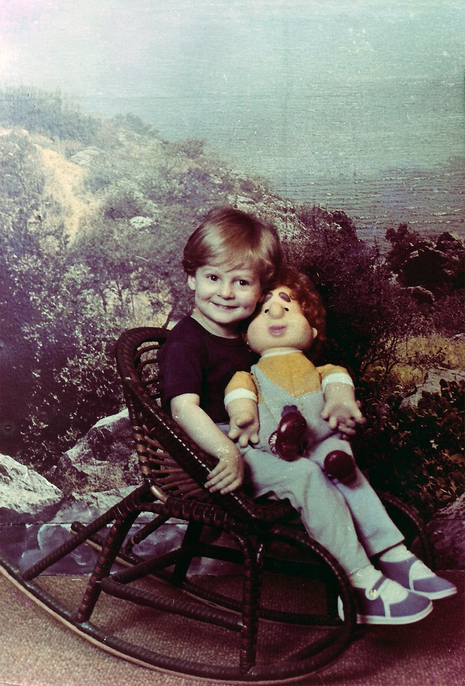
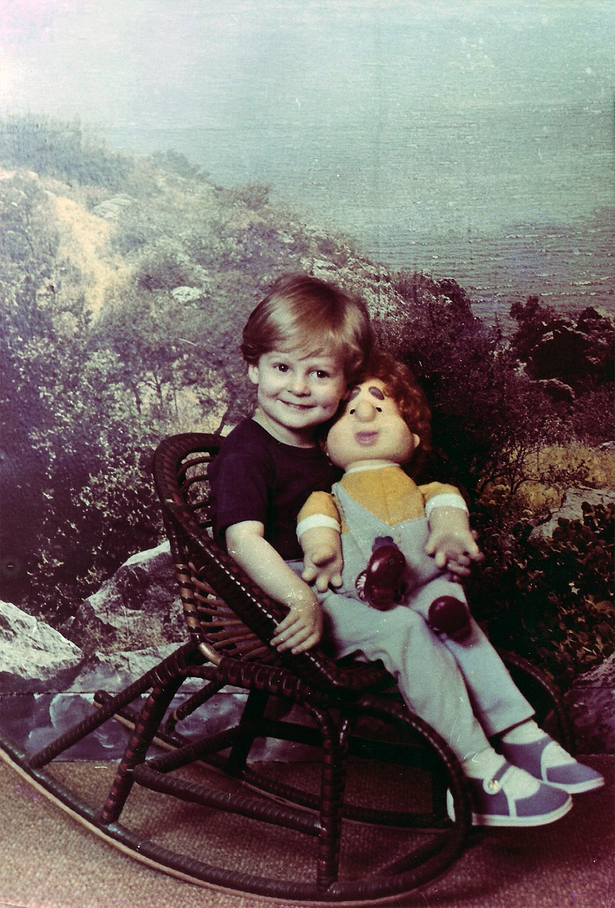

 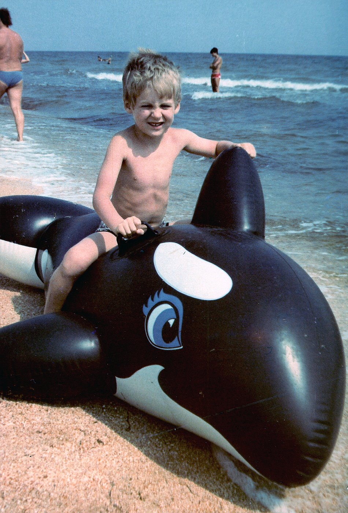
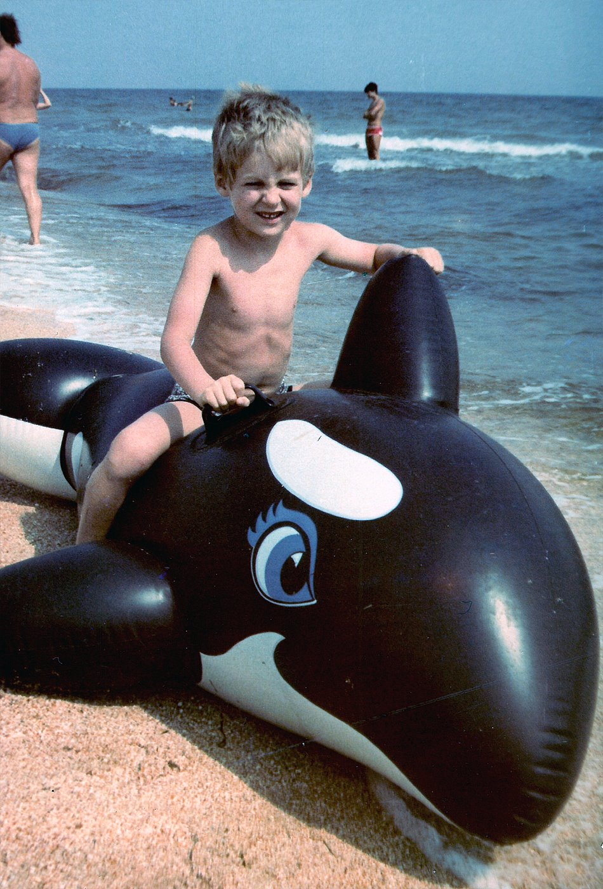
 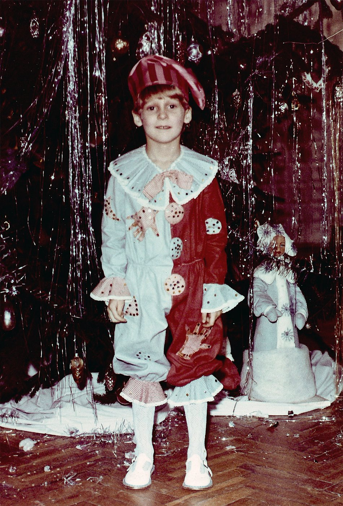
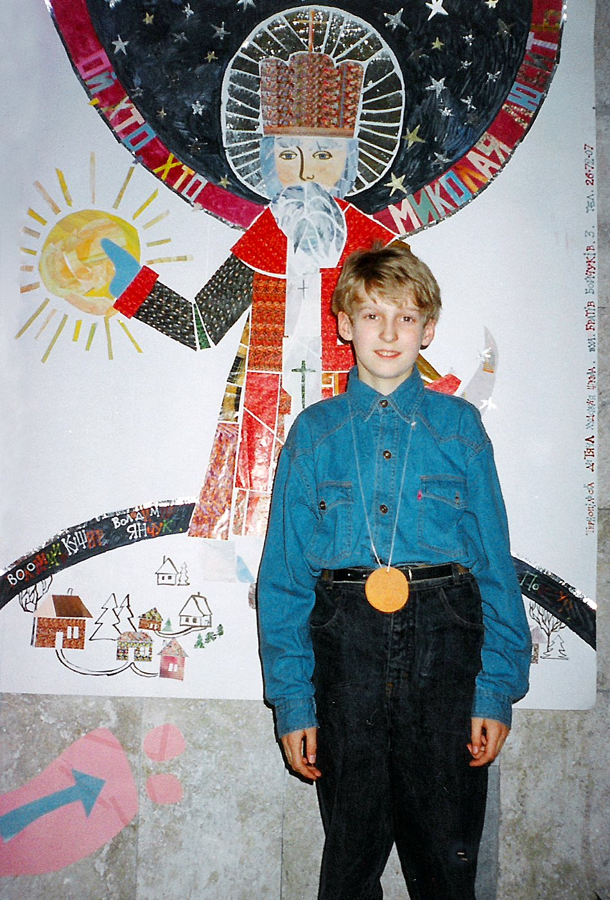
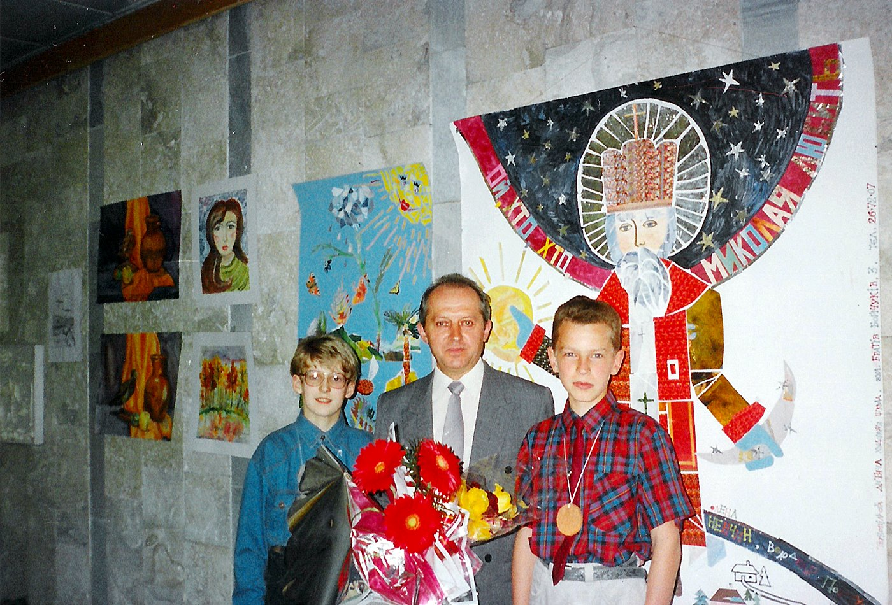
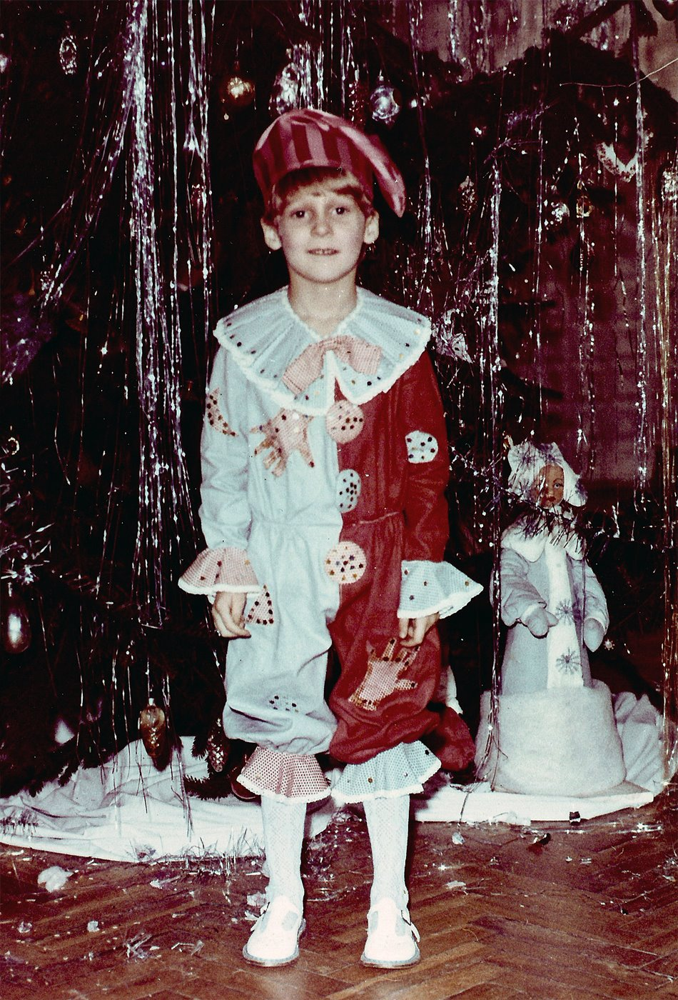
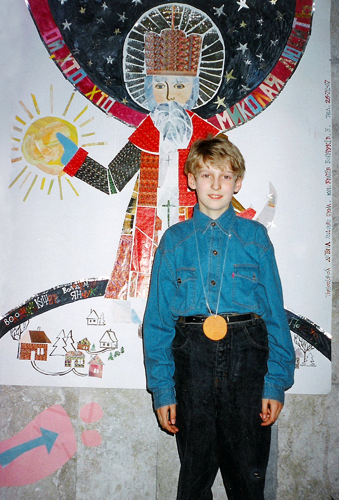
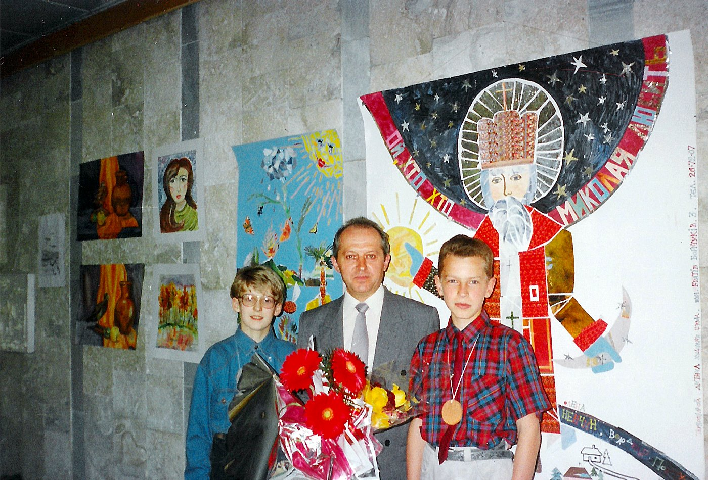
 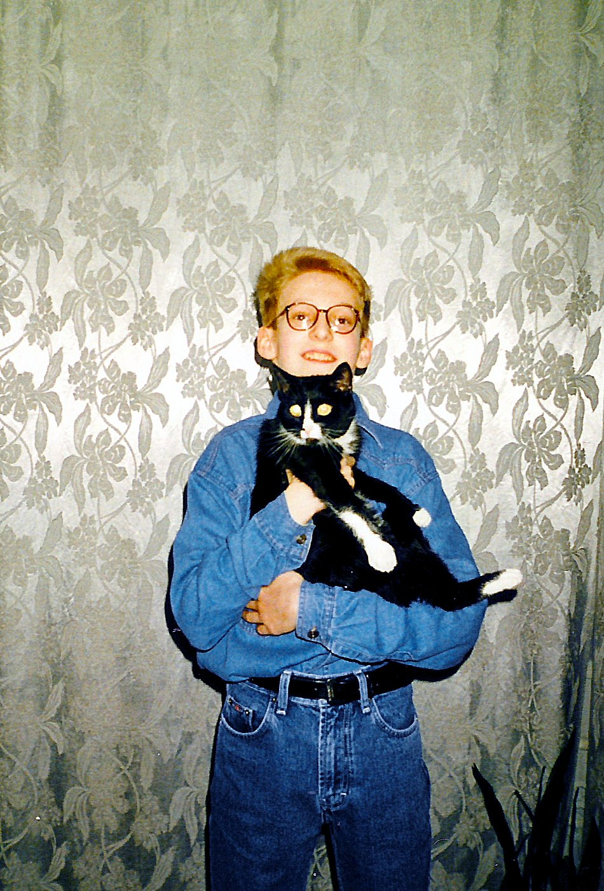
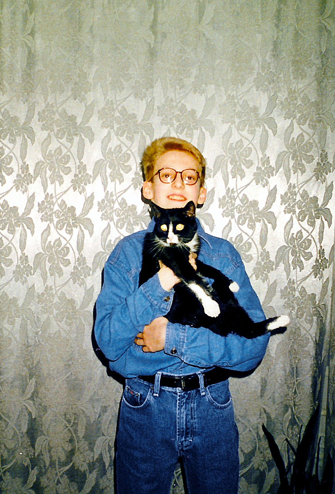